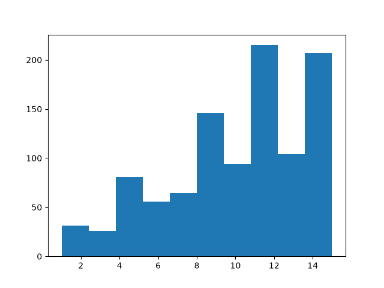
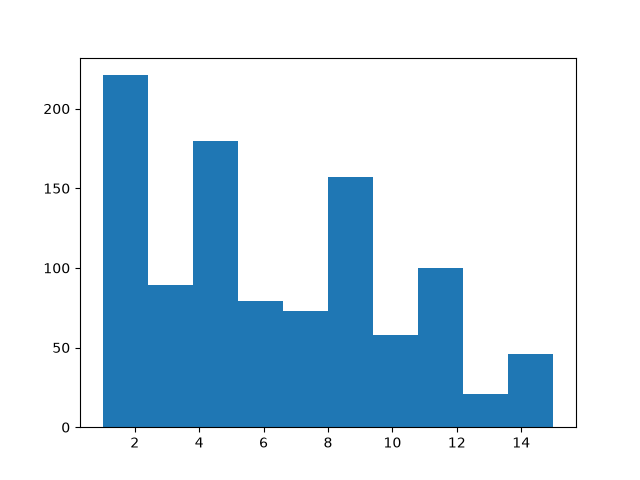

Note
Go to the end to download the full example code.
Using Replay Buffers#
Author: Vincent Moens
Replay buffers are a central piece of any RL or control algorithm. Supervised learning methods are usually characterized by a training loop where data is randomly pulled from a static dataset and fed successively to the model and loss function. In RL, things are often slightly different: the data is gathered using the model, then temporarily stored in a dynamic structure (the experience replay buffer), which serves as dataset for the loss module.
As always, the context in which the buffer is used drastically conditions how it is built: some may wish to store trajectories when others will want to store single transitions. Specific sampling strategies may be preferable in contexts: some items can have a higher priority than others, or it can be important to sample with or without replacement. Computational factors may also come into play, such as the size of the buffer which may exceed the available RAM storage.
For these reasons, TorchRL’s replay buffers are fully composable: although they come with “batteries included”, requiring a minimal effort to be built, they also support many customizations such as storage type, sampling strategy or data transforms.
In this tutorial, you will learn:
How to build a Replay Buffer (RB) and use it with any datatype;
How to customize the buffer’s storage;
How to use RBs with TensorDict;
How to sample from or iterate over a replay buffer, and how to define the sampling strategy;
How to use prioritized replay buffers;
How to transform data coming in and out from the buffer;
How to store trajectories in the buffer.
Basics: building a vanilla replay buffer#
TorchRL’s replay buffers are designed to prioritize modularity, composability, efficiency, and simplicity. For instance, creating a basic replay buffer is a straightforward process, as shown in the following example:
import gc
import tempfile
from torchrl.data import ReplayBuffer
buffer = ReplayBuffer()
By default, this replay buffer will have a size of 1000. Let’s check this
by populating our buffer using the extend()
method:
print("length before adding elements:", len(buffer))
buffer.extend(range(2000))
print("length after adding elements:", len(buffer))
length before adding elements: 0
length after adding elements: 1000
We have used the extend() method which is
designed to add multiple items all at once. If the object that is passed
to extend has more than one dimension, its first dimension is
considered to be the one to be split in separate elements in the buffer.
This essentially means that when adding multidimensional tensors or tensordicts to the buffer, the buffer will only look at the first dimension when counting the elements it holds in memory. If the object passed it not iterable, an exception will be thrown.
To add items one at a time, the add() method
should be used instead.
Customizing the storage#
We see that the buffer has been capped to the first 1000 elements that we passed to it. To change the size, we need to customize our storage.
TorchRL proposes three types of storages:
The
ListStoragestores elements independently in a list. It supports any data type, but this flexibility comes at the cost of efficiency;The
LazyTensorStoragestores tensors data structures contiguously. It works naturally withTensorDict(ortensorclass) objects. The storage is contiguous on a per-tensor basis, meaning that sampling will be more efficient than when using a list, but the implicit restriction is that any data passed to it must have the same basic properties (such as shape and dtype) as the first batch of data that was used to instantiate the buffer. Passing data that does not match this requirement will either raise an exception or lead to some undefined behaviors.The
LazyMemmapStorageworks as theLazyTensorStoragein that it is lazy (i.e., it expects the first batch of data to be instantiated), and it requires data that match in shape and dtype for each batch stored. What makes this storage unique is that it points to disk files (or uses the filesystem storage), meaning that it can support very large datasets while still accessing data in a contiguous manner.
Let us see how we can use each of these storages:
from torchrl.data import LazyMemmapStorage, LazyTensorStorage, ListStorage
# We define the maximum size of the buffer
size = 100
A buffer with a list storage buffer can store any kind of data (but we must
change the collate_fn since the default expects numerical data):
buffer_list = ReplayBuffer(storage=ListStorage(size), collate_fn=lambda x: x)
buffer_list.extend(["a", 0, "b"])
print(buffer_list.sample(3))
['a', 'b', 0]
Because it is the one with the lowest amount of assumption, the
ListStorage is the default storage in TorchRL.
A LazyTensorStorage can store data contiguously.
This should be the preferred option when dealing with complicated but
unchanging data structures of medium size:
buffer_lazytensor = ReplayBuffer(storage=LazyTensorStorage(size))
Let us create a batch of data of size torch.Size([3]) with 2 tensors
stored in it:
import torch
from tensordict import TensorDict
data = TensorDict(
{
"a": torch.arange(12).view(3, 4),
("b", "c"): torch.arange(15).view(3, 5),
},
batch_size=[3],
)
print(data)
TensorDict(
fields={
a: Tensor(shape=torch.Size([3, 4]), device=cpu, dtype=torch.int64, is_shared=False),
b: TensorDict(
fields={
c: Tensor(shape=torch.Size([3, 5]), device=cpu, dtype=torch.int64, is_shared=False)},
batch_size=torch.Size([3]),
device=None,
is_shared=False)},
batch_size=torch.Size([3]),
device=None,
is_shared=False)
The first call to extend() will
instantiate the storage. The first dimension of the data is unbound into
separate datapoints:
buffer_lazytensor.extend(data)
print(f"The buffer has {len(buffer_lazytensor)} elements")
The buffer has 3 elements
Let us sample from the buffer, and print the data:
sample = buffer_lazytensor.sample(5)
print("samples", sample["a"], sample["b", "c"])
samples tensor([[ 4, 5, 6, 7],
[ 4, 5, 6, 7],
[ 4, 5, 6, 7],
[ 8, 9, 10, 11],
[ 4, 5, 6, 7]]) tensor([[ 5, 6, 7, 8, 9],
[ 5, 6, 7, 8, 9],
[ 5, 6, 7, 8, 9],
[10, 11, 12, 13, 14],
[ 5, 6, 7, 8, 9]])
A LazyMemmapStorage is created in the same manner.
We can also customize the storage location on disk:
with tempfile.TemporaryDirectory() as tempdir:
buffer_lazymemmap = ReplayBuffer(
storage=LazyMemmapStorage(size, scratch_dir=tempdir)
)
buffer_lazymemmap.extend(data)
print(f"The buffer has {len(buffer_lazymemmap)} elements")
print(
"the 'a' tensor is stored in", buffer_lazymemmap._storage._storage["a"].filename
)
print(
"the ('b', 'c') tensor is stored in",
buffer_lazymemmap._storage._storage["b", "c"].filename,
)
sample = buffer_lazytensor.sample(5)
print("samples: a=", sample["a"], "\n('b', 'c'):", sample["b", "c"])
del buffer_lazymemmap
The buffer has 3 elements
the 'a' tensor is stored in /tmp/tmp1k6ydraw/a.memmap
the ('b', 'c') tensor is stored in /tmp/tmp1k6ydraw/b/c.memmap
samples: a= tensor([[ 8, 9, 10, 11],
[ 4, 5, 6, 7],
[ 8, 9, 10, 11],
[ 0, 1, 2, 3],
[ 0, 1, 2, 3]])
('b', 'c'): tensor([[10, 11, 12, 13, 14],
[ 5, 6, 7, 8, 9],
[10, 11, 12, 13, 14],
[ 0, 1, 2, 3, 4],
[ 0, 1, 2, 3, 4]])
Integration with TensorDict#
The tensor location follows the same structure as the TensorDict that contains them: this makes it easy to save and load buffers during training.
To use TensorDict as a data carrier at its fullest
potential, the TensorDictReplayBuffer class can
be used.
One of its key benefits is its ability to handle the organization of sampled
data, along with any additional information that may be required
(such as sample indices).
It can be built in the same manner as a standard
ReplayBuffer and can
generally be used interchangeably.
from torchrl.data import TensorDictReplayBuffer
with tempfile.TemporaryDirectory() as tempdir:
buffer_lazymemmap = TensorDictReplayBuffer(
storage=LazyMemmapStorage(size, scratch_dir=tempdir), batch_size=12
)
buffer_lazymemmap.extend(data)
print(f"The buffer has {len(buffer_lazymemmap)} elements")
sample = buffer_lazymemmap.sample()
print("sample:", sample)
del buffer_lazymemmap
The buffer has 3 elements
sample: TensorDict(
fields={
a: Tensor(shape=torch.Size([12, 4]), device=cpu, dtype=torch.int64, is_shared=False),
b: TensorDict(
fields={
c: Tensor(shape=torch.Size([12, 5]), device=cpu, dtype=torch.int64, is_shared=False)},
batch_size=torch.Size([12]),
device=cpu,
is_shared=False),
index: Tensor(shape=torch.Size([12]), device=cpu, dtype=torch.int64, is_shared=False)},
batch_size=torch.Size([12]),
device=cpu,
is_shared=False)
Our sample now has an extra "index" key that indicates what indices
were sampled.
Let us have a look at these indices:
print(sample["index"])
tensor([0, 0, 0, 2, 2, 2, 0, 1, 1, 0, 0, 0])
Integration with tensorclass#
The ReplayBuffer class and associated subclasses also work natively with
tensorclass classes, which can conveniently be used to
encode datasets in a more explicit manner:
from tensordict import tensorclass
@tensorclass
class MyData:
images: torch.Tensor
labels: torch.Tensor
data = MyData(
images=torch.randint(
255,
(10, 64, 64, 3),
),
labels=torch.randint(100, (10,)),
batch_size=[10],
)
buffer_lazy = ReplayBuffer(storage=LazyTensorStorage(size), batch_size=12)
buffer_lazy.extend(data)
print(f"The buffer has {len(buffer_lazy)} elements")
sample = buffer_lazy.sample()
print("sample:", sample)
The buffer has 10 elements
sample: MyData(
images=Tensor(shape=torch.Size([12, 64, 64, 3]), device=cpu, dtype=torch.int64, is_shared=False),
labels=Tensor(shape=torch.Size([12]), device=cpu, dtype=torch.int64, is_shared=False),
batch_size=torch.Size([12]),
device=cpu,
is_shared=False)
As expected. the data has the proper class and shape!
Integration with other tensor structures (PyTrees)#
TorchRL’s replay buffers also work with any pytree data structure.
A PyTree is a nested structure of arbitrary depth made of dicts, lists and/or
tuples where the leaves are tensors.
This means that one can store in contiguous memory any such tree structure!
Various storages can be used:
TensorStorage,
LazyMemmapStorage
or LazyTensorStorage all accept this
kind of data.
Here is a brief demonstration of what this feature looks like:
from torch.utils._pytree import tree_map
Let’s build our replay buffer on RAM:
rb = ReplayBuffer(storage=LazyTensorStorage(size))
data = {
"a": torch.randn(3),
"b": {"c": (torch.zeros(2), [torch.ones(1)])},
30: -torch.ones(()), # non-string keys also work
}
rb.add(data)
# The sample has a similar structure to the data (with a leading dimension of 10 for each tensor)
sample = rb.sample(10)
With pytrees, any callable can be used as a transform:
def transform(x):
# Zeros all the data in the pytree
return tree_map(lambda y: y * 0, x)
rb.append_transform(transform)
sample = rb.sample(batch_size=12)
let’s check that our transform did its job:
def assert0(x):
assert (x == 0).all()
tree_map(assert0, sample)
{'a': None, 'b': {'c': (None, [None])}, 30: None}
Sampling and iterating over buffers#
Replay Buffers support multiple sampling strategies:
If the batch-size is fixed and can be defined at construction time, it can be passed as keyword argument to the buffer;
With a fixed batch-size, the replay buffer can be iterated over to gather samples;
If the batch-size is dynamic, it can be passed to the
samplemethod on-the-fly.
Sampling can be done using multithreading, but this is incompatible with the last option (at it requires the buffer to know in advance the size of the next batch).
Let us see a few examples:
Fixed batch-size#
If the batch-size is passed during construction, it should be omitted when sampling:
data = MyData(
images=torch.randint(
255,
(200, 64, 64, 3),
),
labels=torch.randint(100, (200,)),
batch_size=[200],
)
buffer_lazy = ReplayBuffer(storage=LazyTensorStorage(size), batch_size=128)
buffer_lazy.extend(data)
buffer_lazy.sample()
MyData(
images=Tensor(shape=torch.Size([128, 64, 64, 3]), device=cpu, dtype=torch.int64, is_shared=False),
labels=Tensor(shape=torch.Size([128]), device=cpu, dtype=torch.int64, is_shared=False),
batch_size=torch.Size([128]),
device=cpu,
is_shared=False)
This batch of data has the size that we wanted it to have (128).
To enable multithreaded sampling, just pass a positive integer to the
prefetch keyword argument during construction. This should speed up
sampling considerably whenever sampling is time consuming (e.g., when
using prioritized samplers):
buffer_lazy = ReplayBuffer(
storage=LazyTensorStorage(size), batch_size=128, prefetch=10
) # creates a queue of 10 elements to be prefetched in the background
buffer_lazy.extend(data)
print(buffer_lazy.sample())
MyData(
images=Tensor(shape=torch.Size([128, 64, 64, 3]), device=cpu, dtype=torch.int64, is_shared=False),
labels=Tensor(shape=torch.Size([128]), device=cpu, dtype=torch.int64, is_shared=False),
batch_size=torch.Size([128]),
device=cpu,
is_shared=False)
Iterating over the buffer with a fixed batch-size#
We can also iterate over the buffer like we would do with a regular dataloader, as long as the batch-size is predefined:
MyData(
images=Tensor(shape=torch.Size([128, 64, 64, 3]), device=cpu, dtype=torch.int64, is_shared=False),
labels=Tensor(shape=torch.Size([128]), device=cpu, dtype=torch.int64, is_shared=False),
batch_size=torch.Size([128]),
device=cpu,
is_shared=False)
Due to the fact that our sampling technique is entirely random and does not
prevent replacement, the iterator in question is infinite. However, we can
make use of the
SamplerWithoutReplacement
instead, which will transform our buffer into a finite iterator:
from torchrl.data.replay_buffers.samplers import SamplerWithoutReplacement
buffer_lazy = ReplayBuffer(
storage=LazyTensorStorage(size), batch_size=32, sampler=SamplerWithoutReplacement()
)
we create a data that is big enough to get a couple of samples
data = TensorDict(
{
"a": torch.arange(64).view(16, 4),
("b", "c"): torch.arange(128).view(16, 8),
},
batch_size=[16],
)
buffer_lazy.extend(data)
for _i, _ in enumerate(buffer_lazy):
continue
print(f"A total of {_i + 1} batches have been collected")
del buffer_lazy
A total of 1 batches have been collected
Dynamic batch-size#
In contrast to what we have seen earlier, the batch_size keyword
argument can be omitted and passed directly to the sample method:
buffer_lazy = ReplayBuffer(
storage=LazyTensorStorage(size), sampler=SamplerWithoutReplacement()
)
buffer_lazy.extend(data)
print("sampling 3 elements:", buffer_lazy.sample(3))
print("sampling 5 elements:", buffer_lazy.sample(5))
del buffer_lazy
sampling 3 elements: TensorDict(
fields={
a: Tensor(shape=torch.Size([3, 4]), device=cpu, dtype=torch.int64, is_shared=False),
b: TensorDict(
fields={
c: Tensor(shape=torch.Size([3, 8]), device=cpu, dtype=torch.int64, is_shared=False)},
batch_size=torch.Size([3]),
device=cpu,
is_shared=False)},
batch_size=torch.Size([3]),
device=cpu,
is_shared=False)
sampling 5 elements: TensorDict(
fields={
a: Tensor(shape=torch.Size([5, 4]), device=cpu, dtype=torch.int64, is_shared=False),
b: TensorDict(
fields={
c: Tensor(shape=torch.Size([5, 8]), device=cpu, dtype=torch.int64, is_shared=False)},
batch_size=torch.Size([5]),
device=cpu,
is_shared=False)},
batch_size=torch.Size([5]),
device=cpu,
is_shared=False)
Prioritized Replay buffers#
TorchRL also provides an interface for prioritized replay buffers. This buffer class samples data according to a priority signal that is passed through the data.
Although this tool is compatible with non-tensordict data, we encourage using TensorDict instead as it makes it possible to carry meta-data in and out from the buffer with little effort.
Let us first see how to build a prioritized replay buffer in the generic case. The \(\alpha\) and \(\beta\) hyperparameters have to be manually set:
from torchrl.data.replay_buffers.samplers import PrioritizedSampler
size = 100
rb = ReplayBuffer(
storage=ListStorage(size),
sampler=PrioritizedSampler(max_capacity=size, alpha=0.8, beta=1.1),
collate_fn=lambda x: x,
)
Extending the replay buffer returns the items indices, which we will need later to update the priority:
The sampler expects to have a priority for each element. When added to the buffer, the priority is set to a default value of 1. Once the priority has been computed (usually through the loss), it must be updated in the buffer.
This is done via the update_priority()
method, which requires the indices as well as the priority.
We assign an artificially high priority to the second sample in the dataset
to observe its effect on sampling:
rb.update_priority(index=indices, priority=torch.tensor([0, 1_000, 0.1]))
We observe that sampling from the buffer returns mostly the second sample
("foo"):
['foo', 'foo', 'foo', 'foo', 'foo', 'foo', 'foo', 'foo', 'foo', 'foo']
The info contains the relative weights of the items as well as the indices.
print(info)
{'priority_weight': tensor([2.0893e-10, 2.0893e-10, 2.0893e-10, 2.0893e-10, 2.0893e-10, 2.0893e-10,
2.0893e-10, 2.0893e-10, 2.0893e-10, 2.0893e-10]), 'index': tensor([1, 1, 1, 1, 1, 1, 1, 1, 1, 1])}
We see that using a prioritized replay buffer requires a series of extra steps in the training loop compared with a regular buffer:
After collecting data and extending the buffer, the priority of the items must be updated;
After computing the loss and getting a “priority signal” from it, we must update again the priority of the items in the buffer. This requires us to keep track of the indices.
This drastically hampers the reusability of the buffer: if one is to write a training script where both a prioritized and a regular buffer can be created, she must add a considerable amount of control flow to make sure that the appropriate methods are called at the appropriate place, if and only if a prioritized buffer is being used.
Let us see how we can improve this with TensorDict.
We saw that the TensorDictReplayBuffer returns data
augmented with their relative storage indices. One feature we did not mention
is that this class also ensures that the priority
signal is automatically parsed to the prioritized sampler if present during
extension.
The combination of these features simplifies things in several ways: - When extending the buffer, the priority signal will automatically be
parsed if present and the priority will accurately be assigned;
The indices will be stored in the sampled tensordicts, making it easy to update the priority after the loss computation.
When computing the loss, the priority signal will be registered in the tensordict passed to the loss module, making it possible to update the weights without effort:
The following code illustrates these concepts. We build a replay buffer with a prioritized sampler, and indicate in the constructor the entry where the priority signal should be fetched:
rb = TensorDictReplayBuffer(
storage=ListStorage(size),
sampler=PrioritizedSampler(size, alpha=0.8, beta=1.1),
priority_key="td_error",
batch_size=1024,
)
Let us choose a priority signal that is proportional to the storage index:
data["td_error"] = torch.arange(data.numel())
rb.extend(data)
sample = rb.sample()
higher indices should occur more frequently:
from matplotlib import pyplot as plt
fig = plt.hist(sample["index"].numpy())
plt.show()

Once we have worked with our sample, we update the priority key using
the torchrl.data.TensorDictReplayBuffer.update_tensordict_priority()
method.
For the sake of showing how this works, let us revert the priority of the
sampled items:
Now, higher indices should occur less frequently:

Using transforms#
The data stored in a replay buffer may not be ready to be presented to a
loss module.
In some cases, the data produced by a collector can be too heavy to be
saved as-is. Examples of this include converting images from uint8 to
floating point tensors, or concatenating successive frames when using
decision transformers.
Data can be processed in and out of a buffer just by appending the appropriate transform to it. Here are a few examples:
Saving raw images#
uint8-typed tensors are comparatively much less memory expensive than
the floating point tensors we usually feed to our models. For this reason,
it can be useful to save the raw images.
The following script show how one can build a collector that returns only
the raw images but uses the transformed ones for inference, and how these
transformations can be recycled in the replay buffer:
from torchrl.collectors import Collector
from torchrl.envs.libs.gym import GymEnv
from torchrl.envs.transforms import (
Compose,
GrayScale,
Resize,
ToTensorImage,
TransformedEnv,
)
from torchrl.modules import RandomPolicy
env = TransformedEnv(
GymEnv("CartPole-v1", from_pixels=True),
Compose(
ToTensorImage(in_keys=["pixels"], out_keys=["pixels_trsf"]),
Resize(in_keys=["pixels_trsf"], w=64, h=64),
GrayScale(in_keys=["pixels_trsf"]),
),
)
let us have a look at a rollout:
print(env.rollout(3))
TensorDict(
fields={
action: Tensor(shape=torch.Size([3, 2]), device=cpu, dtype=torch.int64, is_shared=False),
done: Tensor(shape=torch.Size([3, 1]), device=cpu, dtype=torch.bool, is_shared=False),
next: TensorDict(
fields={
done: Tensor(shape=torch.Size([3, 1]), device=cpu, dtype=torch.bool, is_shared=False),
pixels: Tensor(shape=torch.Size([3, 400, 600, 3]), device=cpu, dtype=torch.uint8, is_shared=False),
pixels_trsf: Tensor(shape=torch.Size([3, 1, 64, 64]), device=cpu, dtype=torch.float32, is_shared=False),
reward: Tensor(shape=torch.Size([3, 1]), device=cpu, dtype=torch.float32, is_shared=False),
terminated: Tensor(shape=torch.Size([3, 1]), device=cpu, dtype=torch.bool, is_shared=False),
truncated: Tensor(shape=torch.Size([3, 1]), device=cpu, dtype=torch.bool, is_shared=False)},
batch_size=torch.Size([3]),
device=None,
is_shared=False),
pixels: Tensor(shape=torch.Size([3, 400, 600, 3]), device=cpu, dtype=torch.uint8, is_shared=False),
pixels_trsf: Tensor(shape=torch.Size([3, 1, 64, 64]), device=cpu, dtype=torch.float32, is_shared=False),
terminated: Tensor(shape=torch.Size([3, 1]), device=cpu, dtype=torch.bool, is_shared=False),
truncated: Tensor(shape=torch.Size([3, 1]), device=cpu, dtype=torch.bool, is_shared=False)},
batch_size=torch.Size([3]),
device=None,
is_shared=False)
We have just created an environment that produces pixels. These images are processed to be fed to a policy. We would like to store the raw images, and not their transforms. To do this, we will append a transform to the collector to select the keys we want to see appearing:
from torchrl.envs.transforms import ExcludeTransform
collector = Collector(
env,
RandomPolicy(env.action_spec),
frames_per_batch=10,
total_frames=1000,
postproc=ExcludeTransform("pixels_trsf", ("next", "pixels_trsf"), "collector"),
)
Let us have a look at a batch of data, and control that the
"pixels_trsf" keys have been discarded:
for data in collector:
print(data)
break
collector.shutdown()
TensorDict(
fields={
action: Tensor(shape=torch.Size([10, 2]), device=cpu, dtype=torch.int64, is_shared=False),
done: Tensor(shape=torch.Size([10, 1]), device=cpu, dtype=torch.bool, is_shared=False),
next: TensorDict(
fields={
done: Tensor(shape=torch.Size([10, 1]), device=cpu, dtype=torch.bool, is_shared=False),
pixels: Tensor(shape=torch.Size([10, 400, 600, 3]), device=cpu, dtype=torch.uint8, is_shared=False),
reward: Tensor(shape=torch.Size([10, 1]), device=cpu, dtype=torch.float32, is_shared=False),
terminated: Tensor(shape=torch.Size([10, 1]), device=cpu, dtype=torch.bool, is_shared=False),
truncated: Tensor(shape=torch.Size([10, 1]), device=cpu, dtype=torch.bool, is_shared=False)},
batch_size=torch.Size([10]),
device=None,
is_shared=False),
pixels: Tensor(shape=torch.Size([10, 400, 600, 3]), device=cpu, dtype=torch.uint8, is_shared=False),
terminated: Tensor(shape=torch.Size([10, 1]), device=cpu, dtype=torch.bool, is_shared=False),
truncated: Tensor(shape=torch.Size([10, 1]), device=cpu, dtype=torch.bool, is_shared=False)},
batch_size=torch.Size([10]),
device=None,
is_shared=False)
We create a replay buffer with the same transform as the environment.
There is, however, a detail that needs to be addressed: transforms
used without environments are oblivious to the data structure.
When appending a transform to an environment, the data in the "next"
nested tensordict is transformed first and then copied at the root during
the rollout execution. When working with static data, this is not the case.
Nevertheless, our data comes with a nested “next” tensordict that will be
ignored by our transform if we don’t explicitly instruct it to take care of
it. We manually add these keys to the transform:
t = Compose(
ToTensorImage(
in_keys=["pixels", ("next", "pixels")],
out_keys=["pixels_trsf", ("next", "pixels_trsf")],
),
Resize(in_keys=["pixels_trsf", ("next", "pixels_trsf")], w=64, h=64),
GrayScale(in_keys=["pixels_trsf", ("next", "pixels_trsf")]),
)
rb = TensorDictReplayBuffer(storage=LazyTensorStorage(1000), transform=t, batch_size=16)
rb.extend(data)
tensor([0, 1, 2, 3, 4, 5, 6, 7, 8, 9])
We can check that a sample method sees the transformed images reappear:
print(rb.sample())
TensorDict(
fields={
action: Tensor(shape=torch.Size([16, 2]), device=cpu, dtype=torch.int64, is_shared=False),
done: Tensor(shape=torch.Size([16, 1]), device=cpu, dtype=torch.bool, is_shared=False),
index: Tensor(shape=torch.Size([16]), device=cpu, dtype=torch.int64, is_shared=False),
next: TensorDict(
fields={
done: Tensor(shape=torch.Size([16, 1]), device=cpu, dtype=torch.bool, is_shared=False),
pixels: Tensor(shape=torch.Size([16, 400, 600, 3]), device=cpu, dtype=torch.uint8, is_shared=False),
pixels_trsf: Tensor(shape=torch.Size([16, 1, 64, 64]), device=cpu, dtype=torch.float32, is_shared=False),
reward: Tensor(shape=torch.Size([16, 1]), device=cpu, dtype=torch.float32, is_shared=False),
terminated: Tensor(shape=torch.Size([16, 1]), device=cpu, dtype=torch.bool, is_shared=False),
truncated: Tensor(shape=torch.Size([16, 1]), device=cpu, dtype=torch.bool, is_shared=False)},
batch_size=torch.Size([16]),
device=cpu,
is_shared=False),
pixels: Tensor(shape=torch.Size([16, 400, 600, 3]), device=cpu, dtype=torch.uint8, is_shared=False),
pixels_trsf: Tensor(shape=torch.Size([16, 1, 64, 64]), device=cpu, dtype=torch.float32, is_shared=False),
terminated: Tensor(shape=torch.Size([16, 1]), device=cpu, dtype=torch.bool, is_shared=False),
truncated: Tensor(shape=torch.Size([16, 1]), device=cpu, dtype=torch.bool, is_shared=False)},
batch_size=torch.Size([16]),
device=cpu,
is_shared=False)
A more complex examples: using CatFrames#
The CatFrames transform unfolds the observations
through time, creating a n-back memory of past events that allow the model
to take the past events into account (in the case of POMDPs or with
recurrent policies such as Decision Transformers). Storing these concatenated
frames can consume a considerable amount of memory. It can also be
problematic when the n-back window needs to be different (usually longer)
during training and inference. We solve this problem by executing the
CatFrames transform separately in the two phases.
from torchrl.envs import CatFrames, UnsqueezeTransform
We create a standard list of transforms for environments that return pixel-based observations:
env = TransformedEnv(
GymEnv("CartPole-v1", from_pixels=True),
Compose(
ToTensorImage(in_keys=["pixels"], out_keys=["pixels_trsf"]),
Resize(in_keys=["pixels_trsf"], w=64, h=64),
GrayScale(in_keys=["pixels_trsf"]),
UnsqueezeTransform(-4, in_keys=["pixels_trsf"]),
CatFrames(dim=-4, N=4, in_keys=["pixels_trsf"]),
),
)
collector = Collector(
env,
RandomPolicy(env.action_spec),
frames_per_batch=10,
total_frames=1000,
)
for data in collector:
print(data)
break
collector.shutdown()
TensorDict(
fields={
action: Tensor(shape=torch.Size([10, 2]), device=cpu, dtype=torch.int64, is_shared=False),
collector: TensorDict(
fields={
traj_ids: Tensor(shape=torch.Size([10]), device=cpu, dtype=torch.int64, is_shared=False)},
batch_size=torch.Size([10]),
device=None,
is_shared=False),
done: Tensor(shape=torch.Size([10, 1]), device=cpu, dtype=torch.bool, is_shared=False),
next: TensorDict(
fields={
done: Tensor(shape=torch.Size([10, 1]), device=cpu, dtype=torch.bool, is_shared=False),
pixels: Tensor(shape=torch.Size([10, 400, 600, 3]), device=cpu, dtype=torch.uint8, is_shared=False),
pixels_trsf: Tensor(shape=torch.Size([10, 4, 1, 64, 64]), device=cpu, dtype=torch.float32, is_shared=False),
reward: Tensor(shape=torch.Size([10, 1]), device=cpu, dtype=torch.float32, is_shared=False),
terminated: Tensor(shape=torch.Size([10, 1]), device=cpu, dtype=torch.bool, is_shared=False),
truncated: Tensor(shape=torch.Size([10, 1]), device=cpu, dtype=torch.bool, is_shared=False)},
batch_size=torch.Size([10]),
device=None,
is_shared=False),
pixels: Tensor(shape=torch.Size([10, 400, 600, 3]), device=cpu, dtype=torch.uint8, is_shared=False),
pixels_trsf: Tensor(shape=torch.Size([10, 4, 1, 64, 64]), device=cpu, dtype=torch.float32, is_shared=False),
terminated: Tensor(shape=torch.Size([10, 1]), device=cpu, dtype=torch.bool, is_shared=False),
truncated: Tensor(shape=torch.Size([10, 1]), device=cpu, dtype=torch.bool, is_shared=False)},
batch_size=torch.Size([10]),
device=None,
is_shared=False)
The buffer transform looks pretty much like the environment one, but with
extra ("next", ...) keys like before:
t = Compose(
ToTensorImage(
in_keys=["pixels", ("next", "pixels")],
out_keys=["pixels_trsf", ("next", "pixels_trsf")],
),
Resize(in_keys=["pixels_trsf", ("next", "pixels_trsf")], w=64, h=64),
GrayScale(in_keys=["pixels_trsf", ("next", "pixels_trsf")]),
UnsqueezeTransform(-4, in_keys=["pixels_trsf", ("next", "pixels_trsf")]),
CatFrames(dim=-4, N=4, in_keys=["pixels_trsf", ("next", "pixels_trsf")]),
)
rb = TensorDictReplayBuffer(storage=LazyTensorStorage(size), transform=t, batch_size=16)
data_exclude = data.exclude("pixels_trsf", ("next", "pixels_trsf"))
rb.add(data_exclude)
0
Let us sample one batch from the buffer. The shape of the transformed pixel keys should have a length of 4 along the 4th dimension starting from the end:
TensorDict(
fields={
action: Tensor(shape=torch.Size([1, 10, 2]), device=cpu, dtype=torch.int64, is_shared=False),
collector: TensorDict(
fields={
traj_ids: Tensor(shape=torch.Size([1, 10]), device=cpu, dtype=torch.int64, is_shared=False)},
batch_size=torch.Size([1, 10]),
device=cpu,
is_shared=False),
done: Tensor(shape=torch.Size([1, 10, 1]), device=cpu, dtype=torch.bool, is_shared=False),
index: Tensor(shape=torch.Size([1, 10]), device=cpu, dtype=torch.int64, is_shared=False),
next: TensorDict(
fields={
done: Tensor(shape=torch.Size([1, 10, 1]), device=cpu, dtype=torch.bool, is_shared=False),
pixels: Tensor(shape=torch.Size([1, 10, 400, 600, 3]), device=cpu, dtype=torch.uint8, is_shared=False),
pixels_trsf: Tensor(shape=torch.Size([1, 10, 4, 1, 64, 64]), device=cpu, dtype=torch.float32, is_shared=False),
reward: Tensor(shape=torch.Size([1, 10, 1]), device=cpu, dtype=torch.float32, is_shared=False),
terminated: Tensor(shape=torch.Size([1, 10, 1]), device=cpu, dtype=torch.bool, is_shared=False),
truncated: Tensor(shape=torch.Size([1, 10, 1]), device=cpu, dtype=torch.bool, is_shared=False)},
batch_size=torch.Size([1, 10]),
device=cpu,
is_shared=False),
pixels: Tensor(shape=torch.Size([1, 10, 400, 600, 3]), device=cpu, dtype=torch.uint8, is_shared=False),
pixels_trsf: Tensor(shape=torch.Size([1, 10, 4, 1, 64, 64]), device=cpu, dtype=torch.float32, is_shared=False),
terminated: Tensor(shape=torch.Size([1, 10, 1]), device=cpu, dtype=torch.bool, is_shared=False),
truncated: Tensor(shape=torch.Size([1, 10, 1]), device=cpu, dtype=torch.bool, is_shared=False)},
batch_size=torch.Size([1, 10]),
device=cpu,
is_shared=False)
After a bit of processing (excluding non-used keys etc), we see that the data generated online and offline match!
assert (data.exclude("collector") == s.squeeze(0).exclude("index", "collector")).all()
Storing trajectories#
In many cases, it is desirable to access trajectories from the buffer rather than simple transitions. TorchRL offers multiple ways of achieving this.
The preferred way is currently to store trajectories along the first
dimension of the buffer and use a SliceSampler to
sample these batches of data. This class only needs a couple of information
about your data structure to do its job (not that as of now it is only
compatible with tensordict-structured data): the number of slices or their
length and some information about where the separation between the
episodes can be found (e.g. recall that with a
DataCollector, the trajectory id is stored in
("collector", "traj_ids")). In this simple example, we construct a data
with 4 consecutive short trajectories and sample 4 slices out of it, each of
length 2 (since the batch size is 8, and 8 items // 4 slices = 2 time steps).
We mark the steps as well.
from torchrl.data import SliceSampler
rb = TensorDictReplayBuffer(
storage=LazyTensorStorage(size),
sampler=SliceSampler(traj_key="episode", num_slices=4),
batch_size=8,
)
episode = torch.zeros(10, dtype=torch.int)
episode[:3] = 1
episode[3:5] = 2
episode[5:7] = 3
episode[7:] = 4
steps = torch.cat([torch.arange(3), torch.arange(2), torch.arange(2), torch.arange(3)])
data = TensorDict(
{
"episode": episode,
"obs": torch.randn((3, 4, 5)).expand(10, 3, 4, 5),
"act": torch.randn((20,)).expand(10, 20),
"other": torch.randn((20, 50)).expand(10, 20, 50),
"steps": steps,
},
[10],
)
rb.extend(data)
sample = rb.sample()
print("episode are grouped", sample["episode"])
print("steps are successive", sample["steps"])
gc.collect()
episode are grouped tensor([4, 4, 1, 1, 4, 4, 3, 3], dtype=torch.int32)
steps are successive tensor([1, 2, 1, 2, 0, 1, 0, 1])
1221
Storing trajectories from a collector#
The example above uses hand-crafted data. In practice you will be
collecting data with a Collector (or its
multi-process variants). The collector already tags every transition with
a ("collector", "traj_ids") key, so the
SliceSampler can reconstruct episode boundaries
automatically.
For single-process collectors the setup is straightforward — just
extend the buffer with the collected batch and use traj_ids as
the trajectory key:
from torchrl.collectors import Collector
from torchrl.data import ReplayBuffer, LazyTensorStorage, SliceSampler
rb = ReplayBuffer(
storage=LazyTensorStorage(100_000),
sampler=SliceSampler(
slice_len=20,
traj_key=("collector", "traj_ids"),
),
batch_size=256,
)
collector = Collector(env, policy, frames_per_batch=200, total_frames=-1)
for data in collector:
rb.extend(data)
batch = rb.sample() # contiguous sub-sequences
For multi-process collectors, a subtlety arises: different workers
write their batches independently, so adjacent frames in the buffer can
come from unrelated episodes without an intervening done signal.
The sampler cannot detect these invisible boundaries and may draw slices
that cross episodes.
See also
Trajectory boundaries spells out the full
contract: which markers (trajectory ids, done/truncated/
terminated flags, the write cursor) the sampler uses to recover
episode boundaries, and why this multi-process case is the one
configuration where the markers alone are not enough.
The recommended solution is trajs_per_batch, which makes each worker
write only complete trajectories to the buffer — see
the dedicated collector + replay buffer section
for full examples and discussion.
Important
When using trajs_per_batch, always use a flat 1-D storage
(the default ndim=1). Although batched environments normally call
for ndim=2, trajs_per_batch disassembles batches and writes
each trajectory as a variable-length 1-D sequence. A storage with
ndim >= 2 expects a fixed second dimension that variable-length
trajectories cannot fill.
Conclusion#
We have seen how a replay buffer can be used in TorchRL, from its simplest usage to more advanced ones where the data need to be transformed or stored in particular ways. You should now be able to:
Create a Replay Buffer, customize its storage, sampler and transforms;
Choose the best storage type for your problem (list, memory or disk-based);
Minimize the memory footprint of your buffer.
Next steps#
Check the data API reference to learn about offline datasets in TorchRL, which are based on our Replay Buffer API;
Check other samplers such as
SamplerWithoutReplacement,PrioritizedSliceSamplerandSliceSamplerWithoutReplacement, or other writers such asTensorDictMaxValueWriter.Check how to checkpoint ReplayBuffers in the doc.
Total running time of the script: (0 minutes 0.840 seconds)